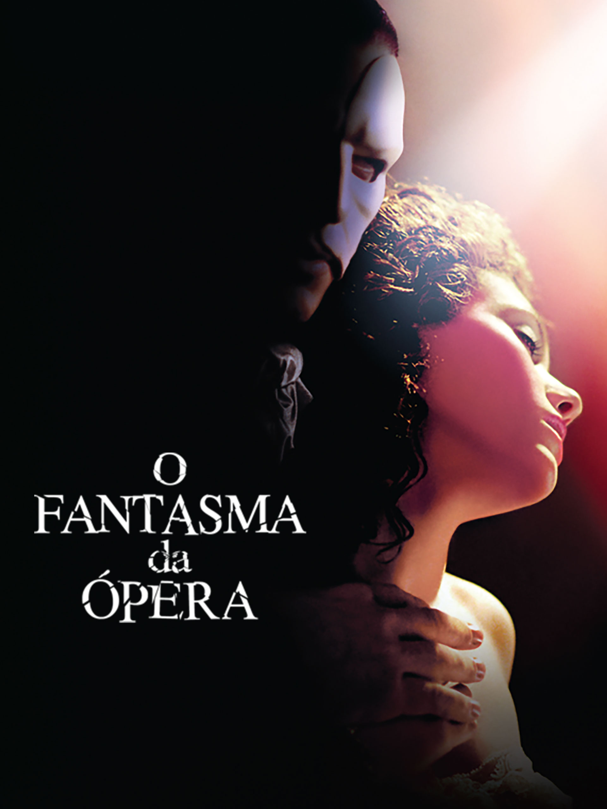
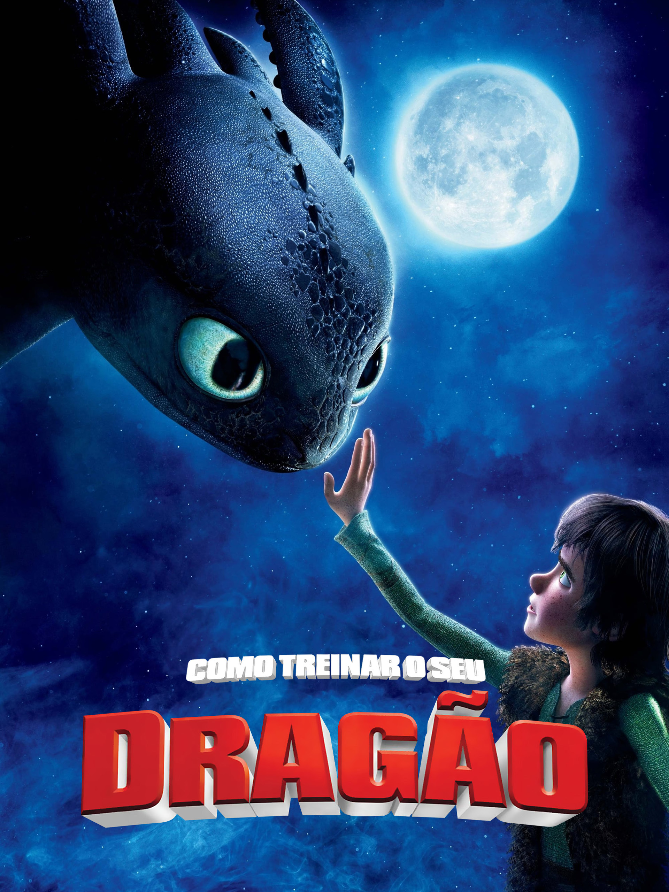
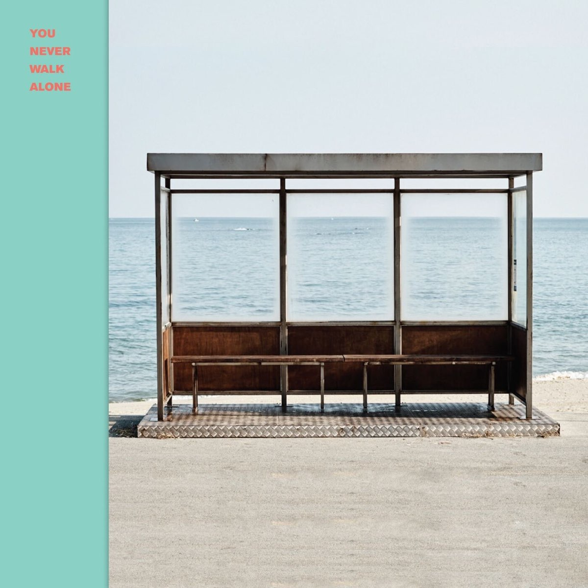
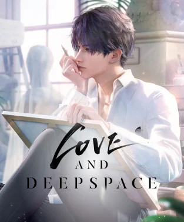
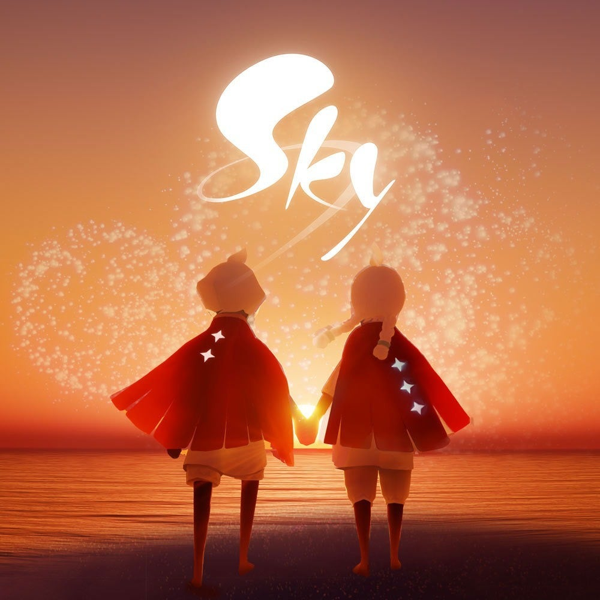

O Fantasma da Ópera (2004) é a adaptação cinematográfica do famoso musical de Andrew Lloyd Webber, dirigido por Joel Schumacher. O filme conta a história de Christine Daaé, uma jovem cantora que desperta a atenção de um misterioso gênio musical conhecido como Fantasma, que vive escondido nos subterrâneos da Ópera de Paris.

Como Treinar o Seu Dragão (2010) é uma animação da DreamWorks baseada nos livros de Cressida Cowell. A história acompanha Soluço, um jovem viking que vive em uma vila onde caçar dragões é tradição. Diferente dos outros, ele é curioso e acaba fazendo amizade com um dragão raro chamado Fúria da Noite (Banguela). Juntos, eles mostram que humanos e dragões podem conviver em harmonia, mudando para sempre a relação da vila com essas criaturas.
A série chinesa “Os Indomáveis” (The Untamed) foi lançada em 2019 e é baseada na novel Mo Dao Zu Shi, escrita por Mo Xiang Tong Xiu. Ela acompanha Wei Wuxian e Lan Wangji, cultivadores que vivem em um mundo de clãs poderosos e acabam envolvidos em mistérios, intrigas e batalhas contra forças sombrias. A trama mistura fantasia, ação e drama, com forte subtexto de amizade e romance entre os protagonistas.

“You Never Walk Alone” é um álbum do BTS lançado em fevereiro de 2017 como uma extensão do disco Wings. Ele trouxe novas faixas marcantes como “Spring Day” e “Not Today”, consolidando ainda mais o grupo no cenário global do K-pop.
“The War” é o quarto álbum de estúdio do grupo sul-coreano EXO, lançado em julho de 2017, e marcou um dos maiores sucessos comerciais da carreira da banda, com a faixa-título “Ko Ko Bop” se tornando um hit do verão
O podcast "O Assunto" é uma produção diária do G1 e Grupo Globo que explica, contextualiza e aprofunda os principais temas do Brasil e do mundo, sempre com entrevistas de especialistas, jornalistas e personagens diretamente ligados às notícias.

"Love and Deepspace" é um jogo mobile de romance interativo que combina narrativa envolvente com elementos de ficção científica. O jogo mistura drama emocional e ambientação futurista, trazendo temas como viagens espaciais, inteligência artificial e dilemas humanos em meio à tecnologia avançada. Além das interações românticas, há momentos de ação e mistério que tornam a experiência mais dinâmica.

"Sky: Children of the Light" é um jogo de aventura social desenvolvido em 2019, lançado inicialmente para iOS e depois expandido para outras plataformas. Ele coloca o jogador em um mundo mágico e poético, onde controla uma criança da luz que deve explorar reinos celestiais, ajudar espíritos e espalhar esperança. O jogo se destaca por sua atmosfera contemplativa e pela experiência de comunidade.
A "realidade virtual" é uma tecnologia que cria ambientes digitais tridimensionais, permitindo que o usuário se sinta imerso e interaja como se estivesse dentro desse espaço. Nos jogos, a RV vem sendo aplicada para oferecer experiências mais intensas e envolventes. Com óculos e controles específicos, jogadores podem explorar mundos virtuais, lutar em batalhas, ou até dançar ao ritmo de músicas.